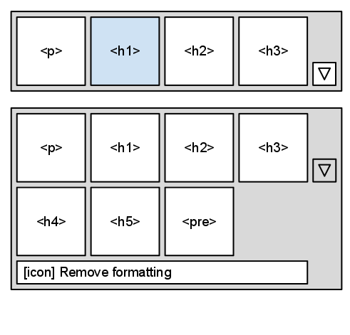

Aloha Editor componentTypes
After reading this guide, you will be able to:
- Understand how to use Aloha component types
This guide is currently a draft for the Aloha Editor jQuery UI, which is supposed to be the next generation UI for Aloha Editor. Your feedback is welcome!
1 Aloha Editor UI Component Types
Component types are your starting point to generate basic components. There is a set of component types that have to be implemented in order to create your own UI:
- Button
- Toggle Button
- Toggle Command Button
- Dropdown
- Multi Split Button
- Panel (for sidebar)
- Autocomplete Repository Attribute
- Splitter (vertical pipe for visual grouping)
- Radiobutton
1.1 Button Component Type Button
The button component type resembles a simple button input element, that can be clicked by the user to trigger an action.
The Button Component must provide a click method to handle user clicks. Here’s an example implementation:
define([ 'aloha/jquery', 'ui/ui' ],
function ( jQuery, Ui ) {
// The button component type creates a simple button.
// Buttons have no state, they only respond to click events.
Ui.createType( "button", {
// The `init` method is invoked when the component is rendered, not when it
// is created. This is necessary to allow multiple renderings of the same
// component. For example, you may want a component to be in the toolbar
// and in the sidebar.
init: function( editable, settings ) {
this._super( editable, settings );
this.element = jQuery( "<button>", {
'class': 'aloha-ui aloha-button'
})
/* this should be a localized label, not the name of the button */
.text( this.settings.name )
.click( jQuery.proxy( function() {
this.click();
}, this ) );
},
// The `click()` method is invoked whenever the user clicks the rendered button.
click: function() {
this.settings.click.apply( this, arguments );
}
});
return Ui.button;
});
1.2 Toggle Button Component Type ToggleButton
A toggle button acts like the basic button component type, but will remain pressed when clicked. Clicking the toggle button once again will revert it back to normal state. The setState( on ) method has to be implemented for Aloha Editor to be able to set the button state.
Here’s an example implementation of the toggle button
define([ 'aloha/core', 'ui/ui', 'ui/button' ],
function ( Aloha, Ui, Button ) {
// The toggleButton extends the button component type to provide an easy
// way to create buttons for commands that are either on or off.
Ui.createType( "toggleButton", Button, {
// The `setState()` method updates the visual display of the toggleButton.
setState: function( on ) {
this.element.toggleClass( "aloha-button-on", on );
}
});
return Ui.toggleButton;
});
1.3 Toggle Command Button Type ToggleCommandButton
The ToggleCommandButton is used to modify contents by triggering Aloha Editor’s internal commands API available via Aloha.execCommand( command ). The command will then modify the current user selection. A very common usecase for this would be to apply bold formatting.
The ToggleCommandButton has to implement the following methods:
- click() which is triggered when clicking the button
- selectionChange() which will be triggered when the user updates the browser selection. This will enable the toggleCommandButton to change it’s current highlight state in order to reflect the current content formatting the cursor is placed within.
define([ 'aloha/core', 'ui/ui', 'ui/togglebutton' ],
function ( Aloha, Ui, ToggleButton ) {
// The toggleCommandButton extends the toggleButton component type to provide an easy
// way to create buttons for __commands__ that are either on or off.
Ui.createType( "toggleCommandButton", ToggleButton, {
// On click, we will always execute the command. Since toggleCommandButton is
// used for binary commands, there is no need to provide a value
click: function() {
Aloha.execCommand( this.settings.command );
},
// When the selection changes, the button will query the current state
// of the command to determine if the button should be rendered as
// on or off.
selectionChange: function() {
this.setState( Aloha.queryCommandState(this.settings.command) );
}
});
return Ui.toggleCommandButton;
});
1.4 Dropdown Component Type Dropdown
The dropdown component will provide functionality as known by the html <select> input field. The following methods have to be implemented:
- setValue() to switch the dropdown to another value
- getValue() to read the currently selected value from the dropdown
1.5 MultiSplitButton Component Type MultiSplitButton
The MultiSplitButton is intended to provide an array of buttons to select from which will apply interchangeable stylings to selected content. The classic use for the MultiSplitButton is a selection of standard paragraph and header stylings. In case there are more than four buttons it can be extended to reveal additional buttons. The currently applied selection is highlighted. It’s also possible to add special buttons at the bottom which are reserved for actions such as removing formatting from selected content.

The MultiSplitButton has to provide methods to read the currently active button as well as switching another button to highlight state.
- getActiveButton() will return the currently active button
- setActiveButton(button) will switch the current button to highlight state
1.6 Panel
See the Sidebar for details.
1.7 AutocompleteRepositoryAttribute Component Type AutocompleteRepositoryAttribute
This is a basic input field that is augmented with autocomplete (typeahead) capabilities from data repositories. When entering a value all configured repositories should be searched for it. The input field is linked to a dom element’s attribute by configuration and is able to update the element when changing the value.
The following methods are provided:
- getValue() retrieve the current value
- getRepositoryItem() retrive the currently selected repository item if any
- setValue(val) set a value
- setRepositoryItem(item) set repository item
1.8 Splitter (vertical pipe for visual grouping)
The splitter is just an optical seperator (like a pipe symbol) to organize buttons in the toolbar.
1.9 Radiobutton Component Type RadioButton
Just your standard RadioButton as known from html.
- getValue() currently selected value
- getValues() array of all possible values
- setValue(value) set current value
- September 1, 2011: Initial version by Haymo Meran and Scott Gonzales
 Chapters
Chapters